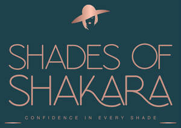

Trade Mark Journal No.2025/020 16 May 2025
UK00004169407 5 March 2025 (3,18,25)

- Class 3
- Hair cosmetics; Cosmetic hair lotions; Hair styling lotions; Cosmetics; Cosmetics for the use on the hair; Hair care lotions [for cosmetic use]; Hair lotions; Skin masks [cosmetics]; Mousses [toiletries] for use in styling the hair; Hair tonics [for cosmetic use]; Skincare cosmetics; Colour cosmetics; Skin fresheners [cosmetics]; Hair care lotions; Colouring lotions for the hair; Colour cosmetics for the skin; Hair care creams [for cosmetic use]; Hair protection lotions; Cosmetics for eye-lashes; Cosmetic hair dressing preparations; Facial gels [cosmetics]; Skin moisturizers used as cosmetics; Styling lotions; Decorative cosmetics; Make-up palettes containing cosmetics; Body and facial creams [cosmetics]; Facial creams [cosmetics]; Body creams [cosmetics]; Body and facial gels [cosmetics]; Colour cosmetics for children; Skin care cosmetics; Hair rinses [for cosmetic use]; Body gels [cosmetics]; Hair shampoos; Tanning oils [cosmetics]; Nail cosmetics; Multifunctional cosmetics; Moisturisers [cosmetics]; Cosmetics in the form of lotions.
- Class 18
- Bags for sports clothing; Fashion handbags; Cosmetic purses; Make-up bags; Makeup bags; Purses [leatherware]; Handbags; Handbags, purses and wallets; Clutch purses [handbags]; Leather handbags; Handbags for ladies; Ladies handbags; Straps for handbags; Clutch handbags; Handbags for men; Purse frames [handbags]; Bags; Briefcases [leather goods]; Shoe bags; Cosmetic bags; Toiletry bags; Canvas shopping bags; Small purses.
- Class 25
- Footwear; Clothing; Sneakers [footwear]; Ready-to-wear clothing; Leather clothing; Clothing of leather; Leather (Clothing of -); Woolen clothing; Gloves [clothing]; Footwear for women; Jackets being sports clothing; Clothing for sports; Sports clothing; Garments for protecting clothing; Flip-flops for use as footwear; Shorts [clothing]; Footwear for men; Jerseys [clothing]; Casual clothing; Corsets [clothing, foundation garments]; Athletic footwear; Footwear for sports; Sports footwear.
Deborah Oyelade